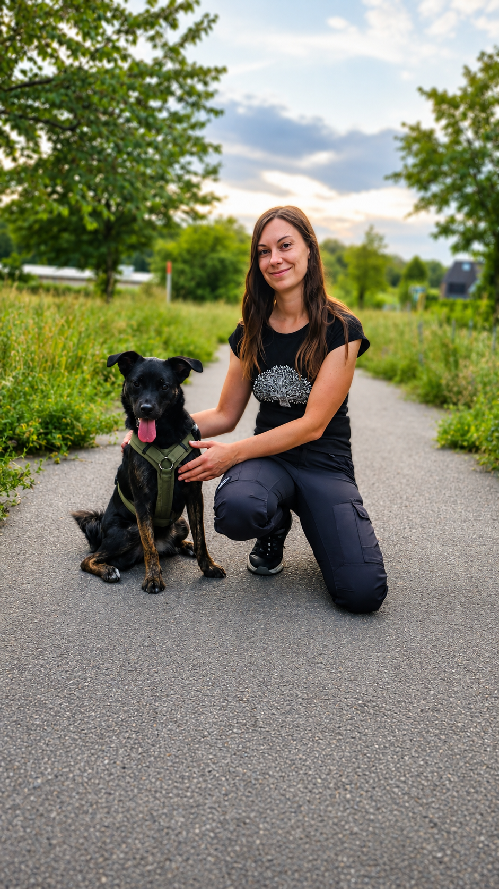

beziehungsweise mit Vertrauen Bindung schaffen
Einfühlsames Training für dich und deinen Hund – auf Vertrauen gebaut, nicht auf Druck.
Eine gesunde Beziehung ist das Fundament.
Wenn mich jemand fragt, was das Wichtigste im Bezug auf das Zusammenleben mit einem Hund ist, dann wird meine Antwort immer lauten: die Beziehung!
Eine gesunde Beziehung, die auf gegenseitigem Vertrauen beruht, ist der Grundpfeiler für ein entspanntes Zusammenleben und bildet die Grundlage für Erziehung.
Wenn du deinem Gegenüber nicht vertraust oder das Gefühl hast, dass Der- oder Diejenige in sämtlichen Entscheidungen wankelmütig ist, kannst du nur schwer oder gar nicht Ratschläge annehmen oder berücksichtigen – und genauso geht es unseren Hunden.
Die Basis für mein Hundetraining bildet die Fähigkeit zum Verständnis der hündischen Kommunikation, sowie das Verständnis dafür, warum mein Hund in unterschiedlichen Situationen wie handelt und weshalb er mich an manchen Stellen vielleicht nicht ernst nehmen kann. Dieses Verständnis und die angemessene menschliche Reaktion bilden die Grundlage für eine solide Beziehung und die darauf aufbauende Erziehung.
Für alle Rassen und Größen.
Egal ob Welpe vom Züchter oder Mix aus dem Tierschutz – jeder Hund ist willkommen.
Training, das zu euch passt.
Wir starten dort, wo ihr gerade steht – und bauen Schritt für Schritt auf. Alles individuell, fair und ohne Druck.
Alle angegebenen Preise sind Endpreise inkl. gesetzlicher Umsatzsteuer.
Einzeltrainings
Individuell und bei euch zu Hause
Ganz auf euch zugeschnitten, in eurem gewohnten Umfeld bei euch zu Hause.
Alles rund um die Beziehung
Wie bekomme ich meinen Hund dazu, mir mehr Aufmerksamkeit zu schenken, nicht mehr an der Leine zu ziehen oder zu mir zurückzukommen, wenn ich ihn rufe? Egal ob Welpe oder Senior: ein Fundament, das zu euch beiden passt.
Mentale Beschäftigung
Kopfarbeit drinnen und draußen, die auslastet und Bindung schafft. Egal ob Energiebolzen oder eher Typ Schlaftablette, wir finden die Beschäftigung, die euch beiden Spaß macht!
Alleine bleiben
Schritt für Schritt wird deinem Vierbeiner geholfen, die Momente, in denen du einmal nicht da bist, entspannt zu erleben.
Alltagssituationen
Besuch, Café, Bus, Begegnungen – souverän durch den ganz normalen Tag.
- Ersttermin · 60 Min.70 €
- Folgetermin · 45 Min.60 €
Gruppenkurse
In der Gruppe lernen · 15 € / Stunde · Rudower Höhe
Lernen in der Gruppe – Erfahrung, die im Alltag trägt. Hier könnt ihr nachsehen, welche Gruppenkurse aktuell angeboten werden.
Die Kurse finden mit max. 6 Teilnehmern auf der Rudower Höhe in 12355 Berlin-Rudow statt. Wir treffen uns am Parkplatz Rudower Höhe und laufen dann gemeinsam zur Trainingswiese.
- Gruppenstunde · 60 Min.15 €
Die kommenden Termine pflege ich hier laufend ein. Für die Anmeldung schreib mir kurz – ich bestätige dir deinen Platz.
Zur Anmeldung
Social Walks in Berlin Rudow
Gemeinsam spazieren mit Lerneffekt
Für den Vierbeiner: Bei einem Spaziergang in der Gruppe lernen, im Beisein anderer Hunde entspannt zu bleiben und sich auf seinen Menschen einzulassen.
Für die Zweibeiner: Kommunikation und Körpersprache des Vierbeiners noch besser verstehen lernen und angemessen darauf reagieren.
Herzlich willkommen sind natürlich auch alle souveränen Hunde, die der Gruppe guttun, und deren Halter, die einfach Lust auf einen gemeinsamen Spaziergang mit Lerneffekt haben!
- 60 Min. · ruhige Umgebung (Rudower Höhe)20 €
- 90 Min. · belebter, Richtung Alt-Rudow30 €
Die anstehenden Termine findest du hier. Melde dich kurz bei mir, dann bist du dabei.
Termin anfragen
Beratung vor der Anschaffung eines Hundes
Vor der Entscheidung gut beraten · ab 25 €
Du möchtest ein neues Mitglied in deine Familie aufnehmen und bist vielleicht noch nicht ganz sicher, ob es ein Welpe vom Züchter oder ein erwachsener Hund aus dem Tierschutz sein soll? Egal, ob du dich schon entschieden hast oder noch schwankst – ich stehe dir gerne bei deinen Überlegungen zur Seite und wir besprechen gemeinsam, welcher Hund am besten zu dir passt und welche Vorbereitungen noch getroffen werden sollten.
Das Angebot gilt selbstverständlich auch, wenn du überlegst, einen Zweithund bei dir aufzunehmen, denn auch hier sollte gut überlegt sein, welcher Vierbeiner zu eurer aktuellen Konstellation passt, um ein harmonisches Zusammenleben zu gewährleisten.
- Via Videochat25 €
- Bei euch zu Hause50 €

Hallo, ich bin Anna.
Ich lebe und arbeite im Süden von Berlin und habe mir mit meiner eigenen Hundeschule einen Lebenstraum erfüllt.
Ich möchte mit dir gemeinsam einen Weg erarbeiten, der zu euch passt und sowohl dich als auch deinen Hund mit einem guten Gefühl aus dem Training entlässt – ohne Vorwürfe, ohne Druck.
Egal ob junger Wirbelwind oder unsicherer Tierschutzhund – wir finden gemeinsam die Lösung, euer Zusammenleben zu bereichern und so entspannt wie möglich zu gestalten.
Ich freue mich auf euch und eure Geschichte!
Lern mich kennenAktiv im Tierschutz mit Kitmir Tierhilfe Demirtas e.V.
Das aktive Engagement für den Tierschutz und insbesondere für den Verein Kitmir Tierhilfe Demirtas e.V. ist ein fester Bestandteil meines Lebens geworden.
Neben der ehrenamtlichen Arbeit für den Verein kläre ich gern über die Vorurteile gegenüber Tierschutzhunden auf und zeige, was für liebenswerte Familienmitglieder auf ein eigenes Zuhause warten.
Kitmir Tierhilfe Demirtas e.V. kennenlernenGut zu wissen.
Für welche Hunde ist dein Training geeignet?
Für alle Rassen und Größen – vom Welpen über den Familienbegleiter bis zum Arbeits- und Tierschutzhund. Ich arbeite individuell und passe das Training an euch beide an.
Wo finden die Gruppenkurse statt?
Die Gruppenkurse finden auf der Rudower Höhe in 12355 Berlin-Rudow statt, in kleinen Gruppen mit max. 6 Teilnehmern. Treffpunkt ist der Parkplatz Rudower Höhe, von dort gehen wir gemeinsam zur Trainingswiese. Einzeltraining biete ich bei euch zu Hause an.
Bietest du Online-Kurse an?
Online- und Video-Kurse sind in Vorbereitung. Du kannst dich unverbindlich vormerken lassen und bist dann zuerst dabei.
Wie nehme ich am besten Kontakt auf?
Am schnellsten per WhatsApp, per Instagram-Nachricht oder E-Mail. Schreib mir einfach – du entscheidest, welcher Weg dir am liebsten ist.
Was kostet das Training?
Eine Übersicht aller Preise findest du direkt bei den Angeboten. Kurz zusammengefasst:
- Einzeltraining: Ersttermin 60 Min. 70 €, Folgetermine 45 Min. 60 €
- Gruppentraining: Gruppenstunde 60 Min. 15 €
- Social Walks: 60 Min. 20 €, 90 Min. 30 €
- Beratung vor der Anschaffung: 60 Min. via Videochat 25 €, bei euch zu Hause 50 €
Alle Preise sind Endpreise inkl. gesetzlicher Umsatzsteuer.
Lass uns reden.
Welcher Weg dir am liebsten ist, entscheidest du. Schreib mir einfach – ich freue mich auf euch.
Einzeltraining bei euch zu Hause · Gruppenkurse & Social Walks auf der Rudower Höhe, Berlin-Rudow